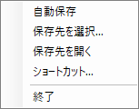
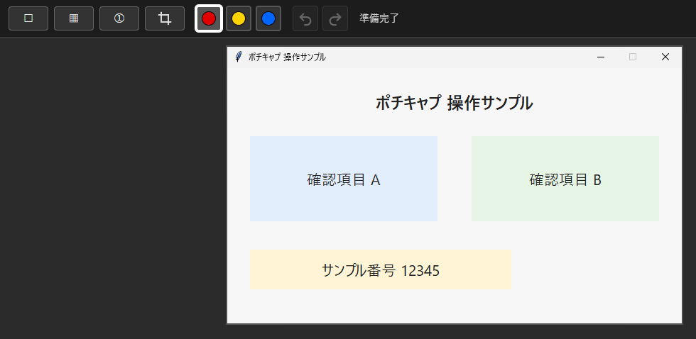
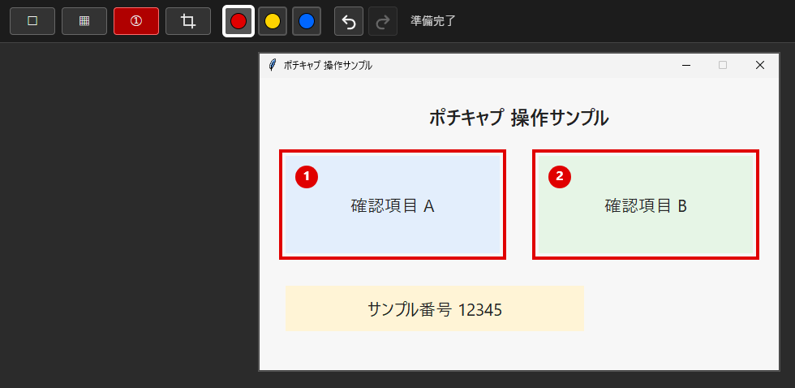
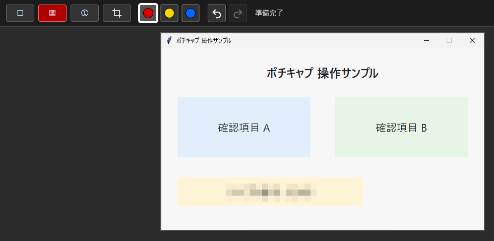
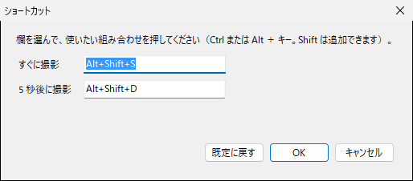

ポチキャプ サポート
運営・お問い合わせ：ポチキャプ サポート
ポチキャプについて
ショートカットキー 1 回で、いま見ているウィンドウをキャプチャ。すぐに編集画面が開き、閉じるだけでクリップボードへコピーされます。AI チャットやチャット、メールなど、画像の貼り付けに対応したサービスへ貼り付けて、画面を分かりやすく見せられます。タスクトレイに常駐します。アカウント登録・広告はありません。
かんたんな使い方
- 見せたいウィンドウを前に出して、Alt+Shift+S を押します（5 秒後に撮るときは Alt+Shift+D）。
- 編集画面が開きます。必要なら、四角枠・番号・モザイクで分かりやすくします。
- 編集画面を右上の × で閉じると、画像がクリップボードへコピーされます。
- AI チャットやメールなどの入力欄で Ctrl+V を押して貼り付けます。
画像付きの手順
1. タスクトレイに常駐します

タスクトレイのポチキャプのアイコンを右クリックすると、このメニューが開きます。自動保存・保存先・ショートカットの設定と終了は、ここから行います。
2. ショートカットで、すぐに編集画面が開きます

見せたいウィンドウを前に出して Alt+Shift+S を押すと、そのウィンドウの画像で編集画面が開きます。
3. 四角枠と番号で、見てほしい所と順番を示せます

四角枠（赤・黄・青）で囲み、番号を置くと 1・2・3… と自動で増えます。
4. モザイクで、見せたくない所を隠せます

ドラッグした範囲にモザイクをかけます。モザイクは、秘密情報の完全な保護には向きません。
5. ショートカットは変更できます

メニューの「ショートカット…」から、「すぐに撮影」と「5 秒後に撮影」のキーを変更できます（Ctrl または Alt ＋ キー。Shift は追加できます）。
ショートカット
- すぐに撮影：Alt+Shift+S（既定）
- 5 秒後に撮影：Alt+Shift+D（既定）
- タスクトレイのメニューの「ショートカット…」から変更できます。
できること
- 四角枠（赤・黄・青の 3 色）
- 番号（置いた順に 1・2・3… と自動で増えます）
- モザイク
- 切り抜き
- 元に戻す／やり直し
- 編集画面を閉じると、画像がクリップボードへコピーされます（PNG）
- 自動保存（ON にすると、選んだフォルダーに PNG を保存します）
困ったとき
- ショートカットが効かない：ほかのアプリが同じキーを使っている場合があります。タスクトレイのメニューの「ショートカット…」から別のキーに変更してください。
- 貼り付けられない：編集画面を × で閉じたか確認してください。閉じたときにクリップボードへコピーされます。
- 保存した画像の場所：自動保存が ON のとき、タスクトレイのメニューの「保存先を開く」で保存先フォルダーを開けます。
- アンインストール：下の「アンインストール」をご覧ください。
動作環境
Windows 11（x64）
入手と更新
- Microsoft Store から入手できます（無料）。
- 更新は Microsoft Store を通じて配信されます。更新の受け取り方は、利用者の Microsoft Store の設定に従います。
データの扱い
- 提供者は、本アプリを通じて利用者の情報を収集しません。キャプチャした画像や利用状況を提供者へ送信しません。
- 編集画面の表示に使う Microsoft Edge WebView2 Runtime が、Microsoft のサービスと通信する場合があります。
- 詳しくはプライバシーポリシーをご覧ください。
アンインストール
Windows の設定からアンインストールできます。アンインストールすると、設定と編集画面の表示部品のデータ（本アプリ専用のデータ領域）は削除されます。自動保存で選んだ保存先フォルダーに保存された画像は削除されず、残ります。
利用条件
本アプリには、Microsoft Standard Application License Terms が適用されます。
お問い合わせ
pochicapinfo@gmail.com